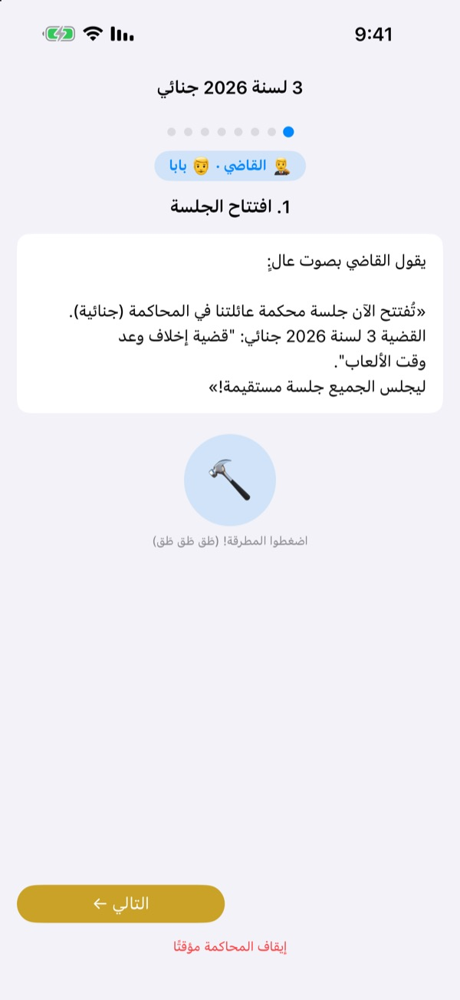
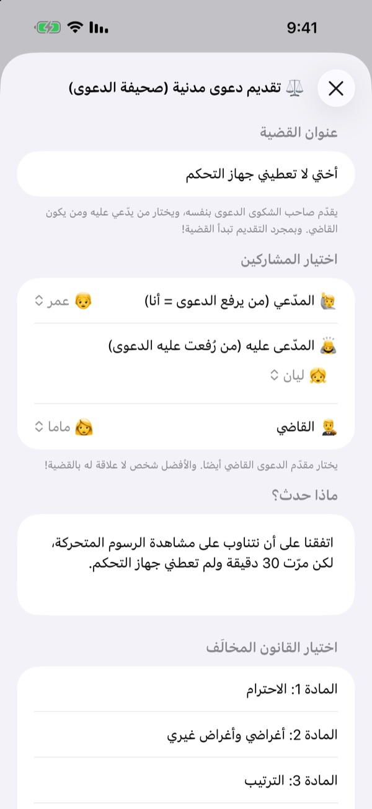
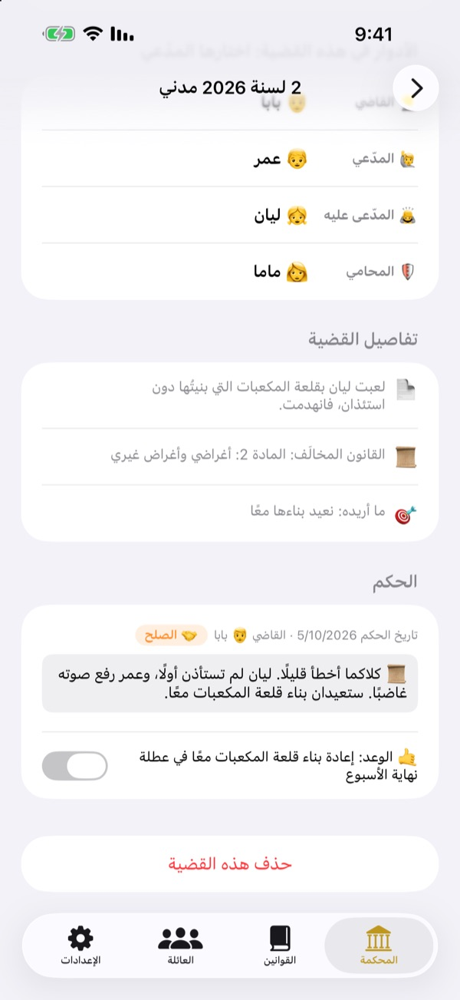
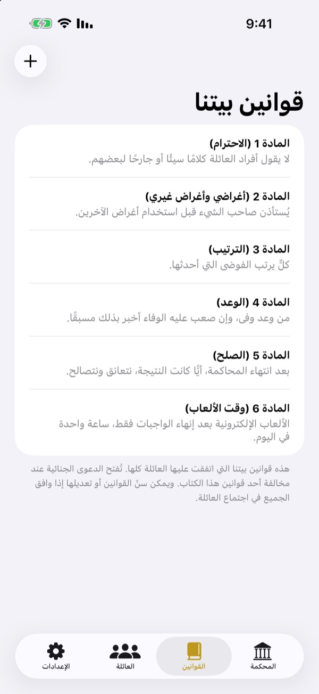

شيء ليس عدلًا؟
حُلّوه في المحكمة لا بالدموع.
يرفع طفلك الدعوى بصفته المدّعي، وتتقاسم العائلة دور القاضي والمحامي. ويرشد النص كل واحد إلى دوره وما يقوله، فتجري حتى أول محاكمة كأنها حقيقية.
المحاكمات مجانية دائمًا. لا إعلانات ولا تسجيل. وتبقى السجلات على هذا الجهاز.

جرّبوا محاكمة
جرّبوا قضية قصيرة: «أخي لا يعطيني جهاز التحكم». غيّروا مستوى الكلمات في الأعلى، واطرقوا المطرقة، وشغّلوا المؤقّت. فيها أصوات، فانتبهوا لمستوى الصوت.
«هو اللي بدأ!» تعبتم من أن تكونوا أنتم الحَكَم دائمًا؟
عندما يقع شجار، يصدر الكبار الحكم عادةً. فيبكي الخاسر لأنه يرى الأمر ظلمًا، ولا يفهم الرابح تمامًا لماذا ربح. تمنح محكمة العائلة الأطفال ترتيبًا واضحًا: قل روايتك كاملة، ثم استمع إلى الطرف الآخر حتى النهاية. وينتهي الحكم بوعد، لا بعقاب فقط.
من يشعر بالظلم يرفع الدعوى
من يرى أن شيئًا ما ليس عدلًا يصبح المدّعي ويقدّم صحيفة الدعوى، ويختار من يدّعي عليه ومن يكون القاضي. حتى الأطفال يمكنهم رفع دعوى على ماما وبابا.
رأيتم مخالفة لقانون البيت؟ كونوا المدّعي العام وافتحوا دعوى جنائية. ولا يكون القاضي إلا شخصًا غير المدّعي والمدّعى عليه.

أحكام تنتهي بوعد
مع الحكم تحددون وعدًا أو عقوبة خفيفة وتضعون علامة عند الوفاء بها. وتصبح القضايا المنتهية سجلًّا لعائلتكم.
تبدأ العقوبات المقترحة بإصلاح ما حدث وجبر الخاطر، فهي أقرب إلى الإصلاح منها إلى العقاب. وتقليل الألعاب أو التلفاز يأتي في آخر القائمة.

بيتكم وقوانينكم
اكتبوا القوانين التي تتفق عليها العائلة، مثل الاحترام والترتيب والوفاء بالوعد، وأضيفوا إليها أو عدّلوها متى شئتم. وتذكر الدعوى القانون الذي خولف.
ويشرح قسم «تعلّم عن المحكمة» عمل القاضي والمدّعي والمدّعي العام والمحامي، وخطوات المحاكمة.

ثلاث خطوات للبدء
- 1
أضيفوا عائلتكم
يكفي اسم ورمز تعبيري. لا حاجة إلى حساب.
- 2
قدّموا دعوى
مدنية إذا كان هناك ظلم، وجنائية إذا خولف قانون البيت. ثم اختاروا القاضي.
- 3
افتحوا المحاكمة
اتبعوا النص، واضبطوا الوقت بالمؤقّت، وأعلنوا الحكم بالمطرقة.
كلمات تكبر مع طفلك
- القاضي
- سهل: الحَكَم · لغة المحكمة: رئيس الجلسة
- المدّعي
- سهل: صاحب الشكوى · لغة المحكمة: المدّعي
- المدّعى عليه
- سهل: المُجيب · لغة المحكمة: المدّعى عليه
- المدّعي العام
- سهل: المُبلِّغ · لغة المحكمة: المدّعي العام
- المتهم
- سهل: المُجيب · لغة المحكمة: المتهم
- المحامي
- سهل: المساعد · لغة المحكمة: المحامي
- مدنية
- سهل: ليس عدلًا · لغة المحكمة: مدنية
- جنائية
- سهل: إخلاف وعد · لغة المحكمة: جنائية
اختاروا مستوى الكلمات في الإعدادات فتتغير كلمات الشاشة والنص معًا. جرّبوا «سهل» لأطفال الروضة و«عادي» لأطفال المدرسة.
أسئلة
لأي عمر يناسب؟
يستطيع أي طفل يقرأ أن يلعب مع أحد الوالدين. ومع النص والتلميحات ومستوى الكلمات «سهل»، يمكن للصغار المشاركة بينما يقرأ أحد الكبار بصوت عالٍ.
هل هو مجاني فعلًا؟
عقد المحاكمات وإصدار الأحكام ومتابعة الوعود مجانية دائمًا ودون إعلانات. ومجانًا يمكنكم إضافة حتى 6 أفراد و12 مادة في قوانين البيت. ويفتح Pro المجال للعائلات الأكبر والقوانين الأطول، وتقديم الدعوى مباشرةً من Siri والاختصارات، وتسمية محكمتكم. اختاروا اشتراكًا أسبوعيًا أو شهريًا أو سنويًا، أو ادفعوا مرة واحدة مدى الحياة. ولا تُفتح شاشة الشراء إلا بعد تحقّق وليّ الأمر. أما الإكرامية الاختيارية في الإعدادات فمنفصلة ولا تفتح أي ميزة.
هل يحتاج إلى الإنترنت؟
لا. المحاكمات والسجلات كلها تعمل دون اتصال. لا تحتاجون إلى الإنترنت وتسجيل الدخول إلى iCloud إلا لإرسال ملاحظاتكم من الإعدادات.
أين تُحفظ سجلاتنا؟
أفراد العائلة والقوانين والمحاكمات والأحكام تُحفظ على جهازكم فقط ولا تُرسل إلى أي خادم. ولا يصل إلى المطوّر إلا ما تختارون إرساله من ملاحظات، وإحصاءات استخدام مجهولة لا تكشف هويتكم.
هل يمكنني نسخ السجلات احتياطيًا أو نقلها؟
استخدموا «حفظ السجلات» في الإعدادات لتصدير كل شيء إلى ملف، ثم «استيراد السجلات» على الجهاز الآخر لاستعادته كما كان. وتُستورد أيضًا النسخ المصدّرة من نسخة الويب القديمة.
هل يعمل على iPad؟
نعم، على iPhone وiPad معًا. والشاشة الكبيرة رائعة حين تجتمع العائلة كلها حولها.
ماذا لو صارت العقوبات قاسية؟
حين يطلب المدّعي العام عقوبة، يذكّر النص الجميع بأن تكون خفيفة وممكنة. وتبدأ العقوبات المقترحة بالإصلاح: إصلاح ما حدث، وجبر الخاطر، وتبادل المواقف.
كيف أحذف كل شيء؟
حذف التطبيق يمسح كل السجلات من الجهاز. لم يغادر شيء جهازكم، فلا يُحتفظ بشيء في مكان آخر. ولحذف ملاحظات أرسلتموها، راسلونا بالبريد.
للأخطاء أو الأفكار أو أي شيء آخر، راسلونا على leeo@kakao.com. ويمكنكم أيضًا استخدام «إرسال ملاحظات» في إعدادات التطبيق.